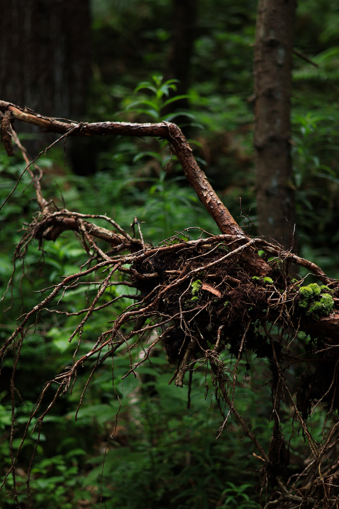
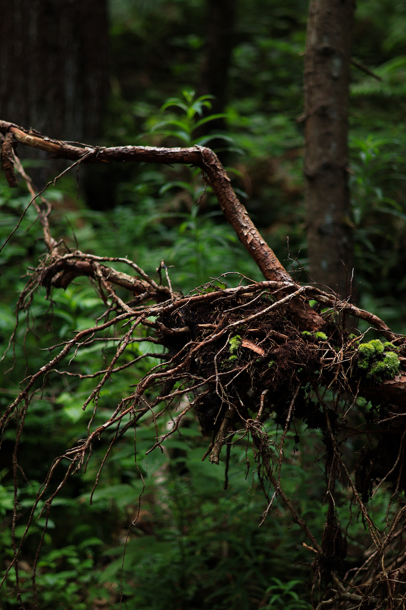

El lucano ciervo (Lucanus cervus), también llamado ciervo volador o ciervo volante europeo, es una especie de coleóptero escarabeiforme perteneciente a la familia Lucanidae. Es el escarabajo más grande de Europa. Los adultos se ven desde mediados de junio hasta mediados de agosto, siendo junio el mes con mayor número de observaciones. A mediados de junio empiezan a salir de la base de los árboles o de zonas donde la madera en descomposición es blanda, en julio y a principios de agosto es el apareamiento, y a mediados de agosto se acaba la época de reproducción. No son una plaga, ya que solo comen madera en descomposición y no atacan a árboles sanos.
 
